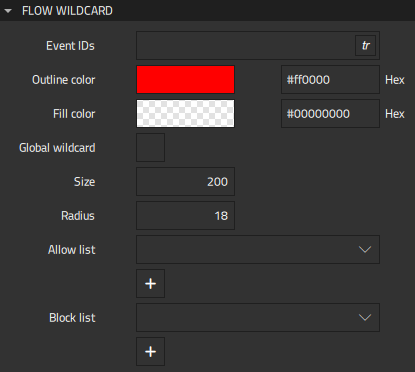

Reacting to External Events
On mobile and embedded platforms, applications are usually integrated into the platform and therefore screens might pop-up from anywhere or at any time, based on a conditional event. For example, push notifications appear on mobile devices and incoming call screens on a car's HMI.
You can use the Flow Wildcard component to model this type of screens in your flow view using real or simulated signals and conditions. You can add flow items to a positive list to prioritize them or to a negative list to stop some screens from appearing on others. For example, you could block the incoming call screen from appearing on a warning screen for the engine if you consider the warning more important.
To use wildcards:
- Drag a Flow Wildcard component from Components > Flow View to an action area in the Navigator or 2D view.
- In Properties, select flow items to add them to the positive and negative list of the action area.
Flow Wildcard Properties
You can specify basic properties for a Flow Wildcard component in the Type and ID fields in the Component section in the Properties view. Specify properties for flow wildcards in the Flow Wildcard section.

In the Event IDs field, specify the IDs of the events to connect to, such as mouse, touch or keyboard events.
Select the Global wildcard check box to enable triggering the wildcard from several flows.
To give flow items high priority, select them in the Allow list field. To block flow items, select them in the Block list field.
You can specify the following properties to change the appearance of the wildcard icon :
- In the Size field, specify the size of the wildcard icon.
- In the Radius field, specify the radius of the wildcard icon corners.
You can use the color picker to set the outline and fill color of the wildcard icon.